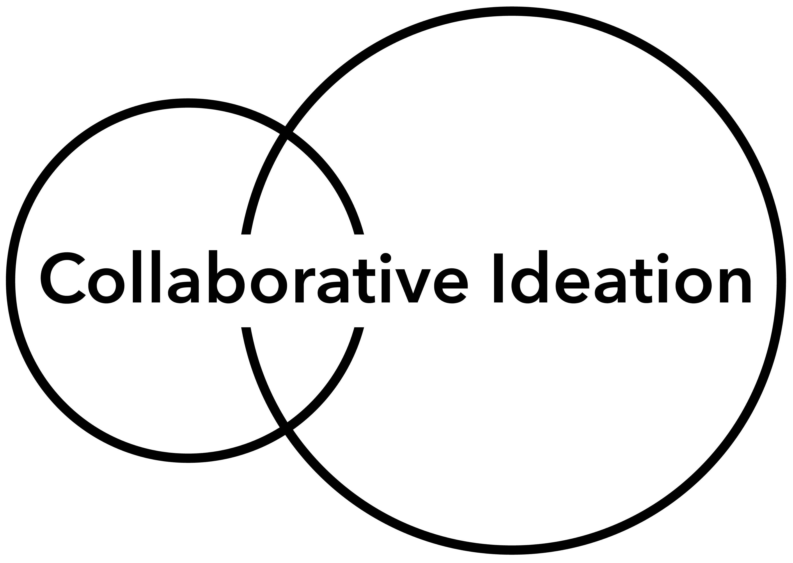

📠Freie Bildung: Selbstlernkurs Collaborative Ideation
Dieses Lernangebot wurde im Rahmen der Hamburg Open Online University (HOOU) entwickelt und ist dort dauerhaft und kostenfrei verfügbar.
In fünf kompakten Lernblöcken wird getzeigt wie Methoden und Werkzeuge eingesetzt werden können, um gemeinsam kreative Ideen zu entwickeln – insbesondere in dezentralen Teams mit digitalen Mitteln.
Du erfährst, wie man Probleme strukturiert beschreibt, Ideen gezielt generiert und gemeinsam bewertet. Im Mittelpunkt stehen offene Zusammenarbeit, Kreativität und der strukturierte Einsatz von Tools.
🧠Inhalte des Kurses
- Probleme analysieren und eingrenzen
- Ideen entwickeln, kombinieren und bewerten
- Gruppen zum Mitmachen motivieren
- Kreativmethoden anwenden
- Digitale Tools für kollaboratives Arbeiten nutzen
Angebote
Kollaborative Ideenwerkstatt auf der Hamburg Open Online University (HOOU)
Kreativitätstechniken für Teams & Einzelpersonen – spielerisch und inspirierend.
Hier geht's zum miroverse.

Fülle deine eigene Welt der Ideen
Hier geht's zum miroverse.
4 Step Creation Method
🌠SDG-Campus-Kurs: Kreative Lösungen für globale Herausforderungen
Dieses Lernangebot wurde im Rahmen des SDG-Campus entwickelt und wird dort im Sommersemester 2025 zum ersten Mal angeboten.
In mehreren Lernblöcken wird gezeigt, wie kreative Methoden und Werkzeuge eingesetzt werden können, um innovative Lösungen für gesellschaftliche und ökologische Herausforderungen zu entwickeln – von Klimaschutz über Müllvermeidung bis zu sozialer Gerechtigkeit.
Es werden Probleme systematisch analysiert, Ideen gezielt entwickelt und bewertet. Im Fokus stehen eigenständiges Arbeiten, Zusammenarbeit im Team sowie der reflektierte Einsatz kreativer und digitaler Tools.
🧠Inhalte des Kurses
- Systematische Problemlösung bei komplexen Herausforderungen
- Recherche und Ursachenanalyse
- Kreative Ideenentwicklung und -auswahl
- Stärkung von kritischem Denken, Teamarbeit und Umsetzungskompetenz
Angebote
🤠Teamwork & Innovation: Praxisorientierter Kurs für Teams und Unternehmen
Dieses speziell für Teams (z.B.in NGOs) und Unternehmen entwickelte Lernangebot unterstützt Sie dabei, kreative Prozesse und kollaborative Methoden gezielt in Ihrem Arbeitsalltag zu verankern.
In praxisnahen Modulen lernen Ihre Teams, wie sie gemeinsam Herausforderungen identifizieren, innovative Ideen generieren und effektive Lösungen umsetzen – auch in verteilten oder interdisziplinären Arbeitsgruppen.
Der Fokus liegt auf der Förderung von Teamdynamik, kreativem Denken und der Nutzung digitaler Tools zur effizienten Zusammenarbeit und nachhaltigen Wirkung.
🧠Inhalte des Kurses
- Gemeinsame Analyse und Priorisierung von Herausforderungen
- Innovationsfördernde Kreativtechniken im Team anwenden
- Motivation und Engagement innerhalb von Teams stärken
- Digitale Werkzeuge für kooperative Projektarbeit effizient nutzen
- Strategien zur Umsetzung und Skalierung von Ideen entwickeln